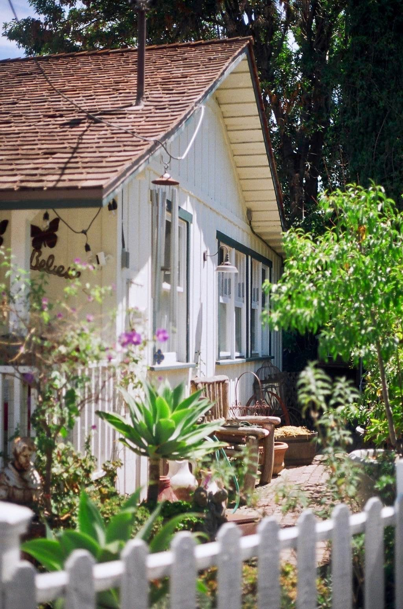
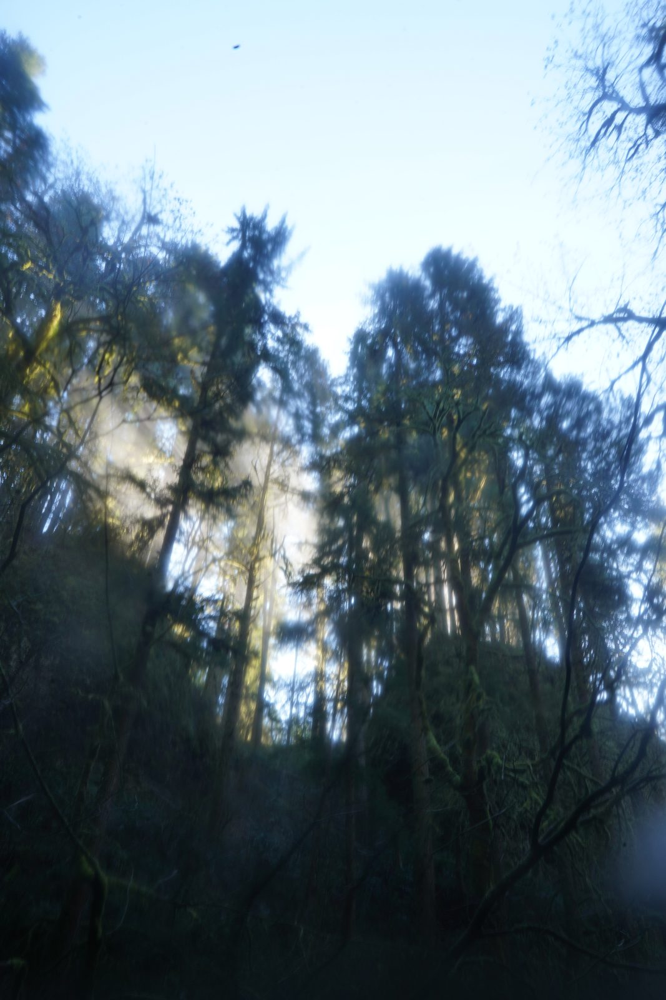
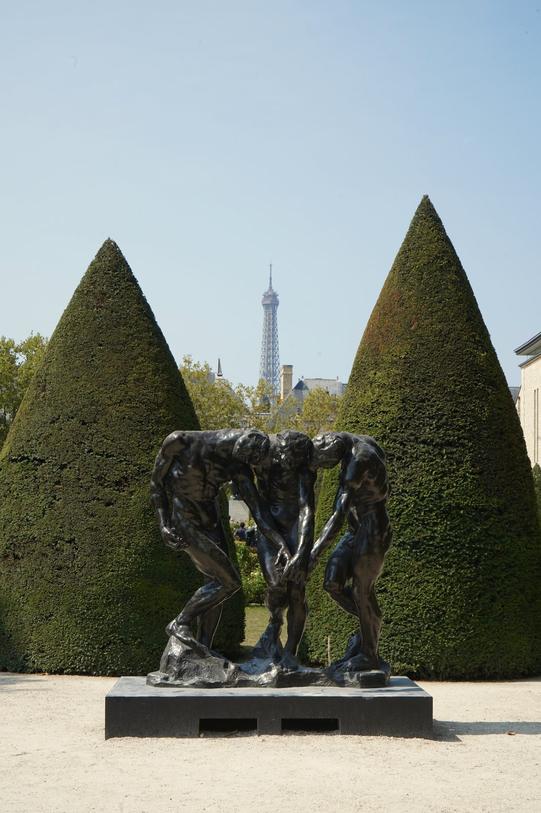
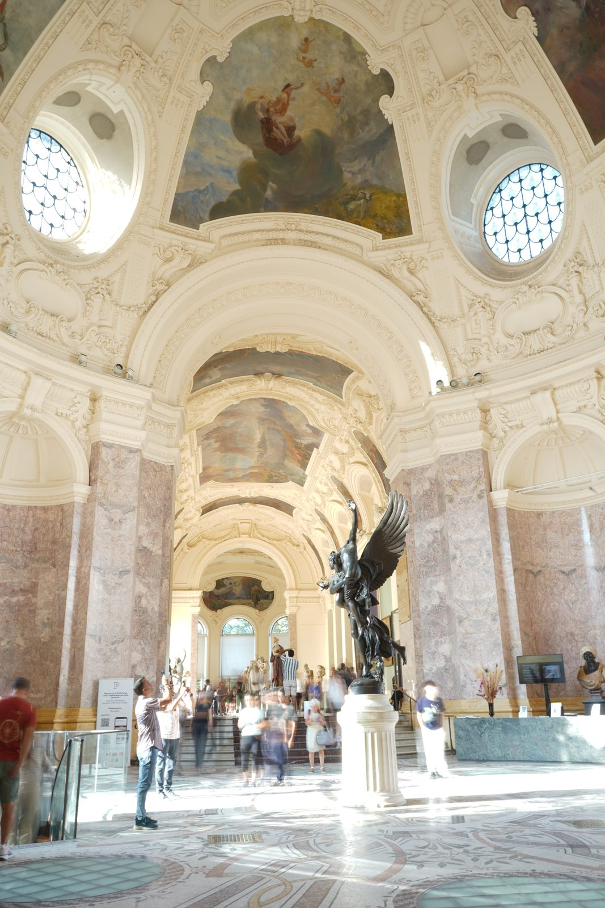
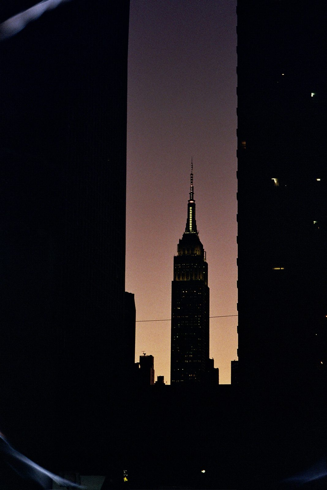
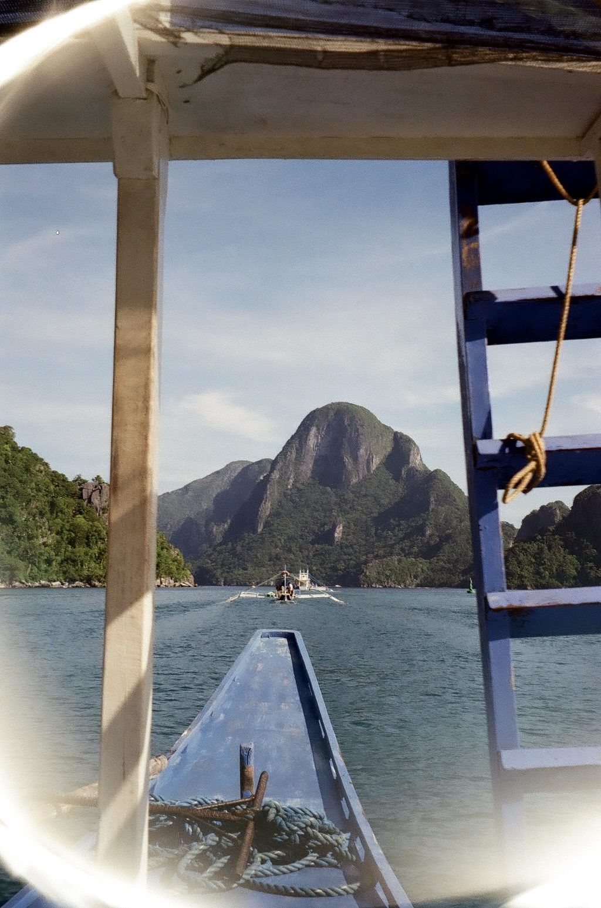
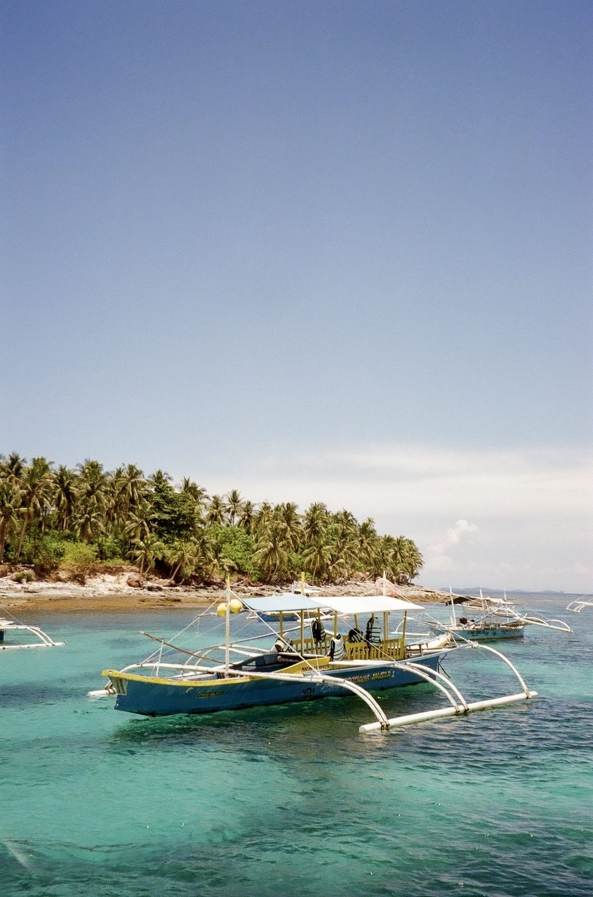

Jeremy Mitaux
Updated July 30, 2026
I received my B.S. in Data Science from the University of Oregon in 2026, where I served as Director of Venture Capital for the Oregon Blockchain Group and External VP of Chi Psi Fraternity.
I'm interested in how emerging technologies reshape institutions, markets, and ultimately how they affect the human experience. That question feels like the defining challenge of this century.
- Shakedown · on-chain ticketing for independent music venues. Four years of fronting a band taught me that a single gig is dozens of handshake agreements; Shakedown writes them into the ticket — resale conditions the venue sets, QR check-in at the door, payment splits enforced in hardware, hybrid NFTs that keep working after the show. It won Best Use Case of Solana at QuackHacks III and reached the finals of Ledger's N3XT Build & Show; Ledger later invited me on a podcast to walk through the build. The current build: Next.js and TypeScript, Supabase, Anchor contracts in Rust, Metaplex Core, Privy embedded wallets.
- Henry's Uncle · the greatest band you've never heard of. A three-piece power trio through college — 30-plus shows booked, promoted, and played, with a radio show along the way. Two self-produced releases, and a third in the works. On Spotify, with more on YouTube.
The stock lens on the AE-1 is a prime 50mm f1.8. My favorite thing about this lens is the limitations it places on you. Want to zoom out? Use your feet. Moreover, it is said that the human eye sees somewhere between 40mm and 50mm. I like to think of this as the most human form of photography.







The world we've built is discrete. The lives we live are continuous.
A look into what inspires me
- “You do not merely want to be considered just the best of the best. You want to be considered the only ones who do what you do.”Jerry Garcia
- “And now that you don't have to be perfect, you can be good.”John Steinbeck, East of Eden
- “You make my world so much bigger and I'm wondering if I do the same for you.”Celine Song, Past Lives
- “If you don't have the right people around you, and your mind is moving a million mph, you'll lose yourself.”Dave Chappelle
- “The right code won't run with the wrong .env file.”@javiercunat
- "Love takes miles." Cameron Winter
- Europe ’72, Grateful Dead
- Toys In The Attic, Aerosmith
- Live on Red Barn Radio I & II, Tyler Childers
- Two Star & The Dream Police , Mk.gee
- Is This It?, The Strokes
- The Blockworks feed, most mornings
- About Time, Richard Curtis
- The Before Trilogy, Richard Linklater
- Rich Dad Poor Dad, Robert Kiyosaki
- Meditations, Marcus Aurelius
- Tortilla Flat, John Steinbeck
- Steve Jobs, Walter Isaacson
- The Prince, Niccolò Machiavelli
- The Lucifer Effect, Philip Zimbardo
- The Republic, Plato
- Railgun — $RAILfund report · may 2026
- Pendle — $PENDLEfund report · feb 2026
- Chainlink — $LINKfund report · nov 2025
- Aster — $ASTfundamental · oct 2025
- Solana — $SOLfund report · apr 2025
- A Web3 Music Economyessay · medium · 2025